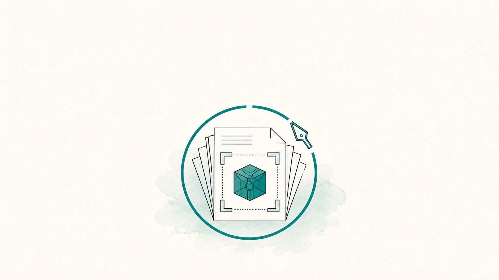
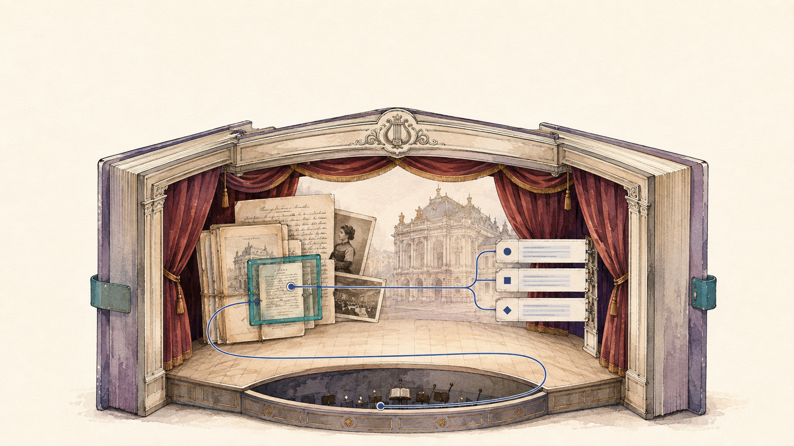

Knowledge, Context and Agentic Engineering for Knowledge Work
A teaching line on working with frontier language models inside AI harnesses, for everyone doing computer-based, data-driven knowledge work. The material is maintained once in five modules, and every workshop below is a documented specialisation of it.
Modules
-
01
Understanding Large Language Models
Capability landscape, jagged capability, latent program space, the assistant character
-
02
Prompt Engineering
The four-part prompt structure, the prompt as a bounded specification, practical principles
-
03
Knowledge and Context Engineering
Knowledge documents, the working context, research data and provenance
-
04
Agentic Engineering
Harness and agentic loop, Promptotyping, verification, hands-on case studies
-
05
Critical Perspectives and Governance
Governance and decision rights, Research Mission Control, openness, societal implications
Unit-level structure beneath the five modules in preparation
Full Slide Deck and Full Lecture Notes

The material exists once, as the Full Slide Deck and the Full Lecture Notes, cut into the five modules above and maintained in one place. A workshop is a profile over that material, meaning a documented selection of modules with its own depth, case material, teaching language and hands-on work. What a given instance selects is recorded in its profile and shown on its card as a module badge row.
- Full Slide Deck Google Slides, all five modules, the source every workshop deck is cut from
- Full Lecture Notes in preparation Two language versions held in the repository, the German source text and an English version in progress
Workshops
Seven instances in chronological order, each with its own module selection. The badge row states how a workshop uses the five modules.
- 4 taught in full
- 4 touched briefly
- 4 not part of this instance
-

16–17 September 2026·two days
Promptotyping und Generative AI
KUG Summer School (M3GIM), Kunstuniversität Graz
Participants without an LLM or programming background Teaching language German
The introductory profile of the line, with what a language model is and how prompting works on the first day and Promptotyping as the working method on the second. Four hands-on units build on one archival holding of the host university, from a cleaned person index through schema extraction and transcription to a small map, all of it in the chat interface without an agent harness.
- 1
- 2
- 3
- 4
- 5
Slides and script in preparation
-

25 September 2026·one day
Knowledge, Context and Agentic Engineering for Research Data Workflows & Digital Editions
CLARIAH-AT Summer School 2026: Machine Learning for Digital Scholarly Editions
Digital humanities students, BA and MA level Teaching language English
The single-day specialisation on research data workflows and digital scholarly editions, with case material from two edition projects at the Zentralbibliothek Zürich and the Literaturarchiv Salzburg. Prompt engineering is the one module with a participant exercise of its own, and the two hands-on units run from the transcription of a difficult manuscript page to structured information against an explicit schema.
- 1
- 2
- 3
- 4
- 5
-

5–6 October 2026·two days
HEDIT KI-Workshop 2026
Forschungsstelle HEDIT, Universität Heidelberg
Researchers from the editions projects of the research centre Teaching language German
Two days for an editions research centre, with TEI modelling, context engineering and the knowledge base as steering instruments on the first day and agentic coding as the central method. The second day is a two-part Promptotyping workshop on the participants' own material, ending in a plenary presentation of the prototypes.
- 1
- 2
- 3
- 4
- 5
Slides and script in preparation
-

8 October 2026·one day
Knowledge, Context und Agentic Engineering für die Forschung
Fachschaft Mittelalterstudien, Universität Heidelberg
Students and early-career researchers in medieval studies Teaching language German
One day worked inside a coding agent throughout, opening on language model and agent fundamentals. Participants build structured project knowledge and then run the arc from handwriting recognition on medieval charters through TEI markup and an index of persons and organisations to a small static edition, checking a prepared model transcription against the facsimile.
- 1
- 2
- 3
- 4
- 5
Slides and script in preparation
-

15 October 2026·half day, hybrid
Generative KI für Datenaufbereitung, Datenmigration und die Pflege von Interfaces
Göttinger Digitale Akademie, Akademie der Wissenschaften zu Göttingen
Staff of academy research projects and library guests Teaching language German
A hybrid half day on agent-supported preparation and migration of research data and on the semi-automated maintenance of interfaces and endpoints. Three existing project pipelines carry the case material, and the hands-on has participants build a small knowledge base for their own data and commission a bounded task from an agent.
- 1
- 2
- 3
- 4
- 5
Slides and script in preparation
-

9–10 November 2026·three units of two hours
Agentic-Engineering-Workshop
Uni for Life, Universität Graz
Professionals from companies and institutions across disciplines Teaching language German
Three compact units for knowledge work beyond academia, with the emphasis on steering agentic work. The first unit covers setup, terminal and permissions, the second builds a knowledge base and defines human control points for document and application work, and the third moves into light coding and small prototypes on a synthetic institutional scenario.
- 1
- 2
- 3
- 4
- 5
Slides and script in preparation
-

30 November – 4 December 2026·five days
VetMed Winter School
Veterinärmedizinische Universität Wien
Administration and research staff Teaching language German
A five-day block week for staff without a coding background, and the fullest derivation of the material among the registered instances. Every module is taught in full, with an exercise each day and one application project from the participants' own working area running through the week, from the chat interface through the terminal to an agent harness with local models.
- 1
- 2
- 3
- 4
- 5
Slides and script in preparation